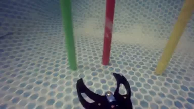
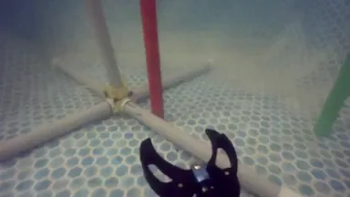
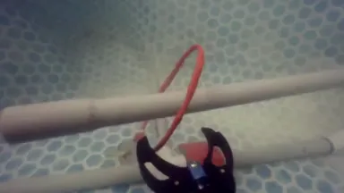
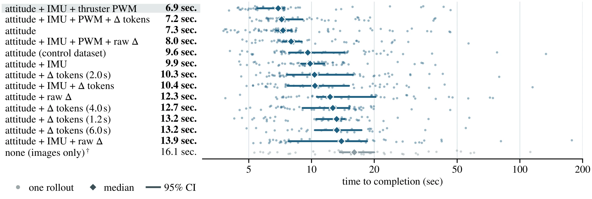
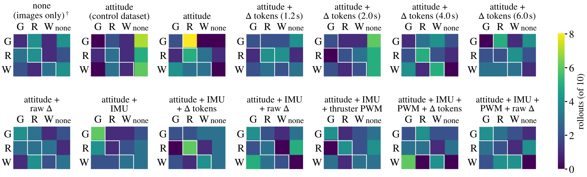

Behavior Cloning has demonstrated promising generalization capabilities for robotic manipulation in terrestrial environments. However, marine visual distortions and dynamic currents create a severe domain shift that remains a key bottleneck in adapting generalist architectures to underwater field manipulation. To address this, 1616 episodes of underwater manipulation data were collected in calm and turbulent waters and were used to train 14 generalist Vision-Language-Action (VLA) models (DynamicVLA) with varying proprioception observation configurations. Across three tasks on 1260 gradable on-hardware rollouts in a pool, 10 models outperformed the baseline, with the highest-performing model achieving a 93.3% overall success rate, including partial successes. Results are also introduced from a case study evaluating the performance of a single-task Action Chunking Transformer (ACT) and a generalist VLA (SmolVLA) policy for two tasks in marine archaeology and conservation: grasping and mooring. Experiments are performed on an ROV on and around the WWII wreck Coralita X127 and at Manoel Island Marina, Malta. Across 748 collected episodes and 508 gradable on-hardware rollouts, the ACT policy substantially outperformed SmolVLA (47.9% vs. 7.9% pooled success rate), earning a 66.7% success rate on the most successful task at the marine archaeological site. To enable further contributions to embodied intelligence in marine field robotics, the BLUEMBODIED KIT used to collect data, train models, and deploy policies on the ROV has been open sourced.
Section I
Can land-trained VLAs be adapted to the sea?
Target Skill: "Moor"
Pre-training Data
Shipwreck
Moor on Post ☀Moor on Rope ☀
Marina
Moor on Ladder ☀Moor on Ladder ☾
Observations
Roll
Pitch
Yaw
RGB Video
Current Depth
Depth Set-Point
Disturbances
Distractors
Tether Drag
Currents
Occlusion
Variable Lighting
Thruster Sway
Action Chunking Transformer
Successful Trajectory
Actions:SurgeSwayHeaveYaw rateCamera tiltGripper
ROV POV
Fig. 1. Overview of Autonomous Underwater Mooring using Action Chunking Transformers (ACT).(Left) Training data collected across shipwreck and marina environments incorporating multi-modal observations and real-world disturbances. These include marine life distractors, tether drag, ocean currents, visual occlusion from water particulate, variable lighting based on depth or time of day, and thruster sway inherent to fluid dynamics. (Right) Autonomous policy execution showing closed-loop mooring trajectory on the Coralita X127 shipwreck.
Marine conservationists and archaeologists routinely perform tasks such as environmental monitoring and specimen retrieval, constrained by poor visibility, dynamic currents, and the physiological limits of human divers. Automating these operations, e.g. via robots, could accelerate scientific research and reduce diver risk.
Recent advances in Behavior Cloning (BC) [2] have enabled robust single-task robot policies from relatively little data. While prior works explore the performance of these approaches in aquatic robotics [3], [4], deployment in real marine archaeology and conservation missions remains largely unexplored.
BC-based policies, particularly Vision-Language-Action (VLA) models, are trained almost exclusively on terrestrial datasets featuring stable lighting and fixed-base manipulators, while underwater vehicles operating in marine environments experience unconstrained 6-DOF motion, drag, turbidity, visual distortion, occlusion, and distractors (see Fig. 1).
Can we adapt a land-based BC approach to successfully perform common marine archaeology and conservation tasks underwater?
TLDR;
1To our knowledge, we introduce the world's first instance of successfully implementing a multi-task VLA underwater on real hardware.
2We implemented a real-world case study of BC manipulation models deployed on an underwater Remotely Operated Vehicle (ROV) at a Mediterranean shipwreck for archaeology and conservation tasks.
3We conducted a thorough investigation into how different proprioception configurations and underwater sensor modalities in a model's observation and action spaces affect generalist model behavior underwater.
4We introduce the BluEmbodied Kit as an open source repository that enables users to collect underwater teleoperation data, train single (ACT) and multi-task models (DynamicVLA, SmolVLA), and run inference on Blue Robotics' BlueROV2 while staying compatible with BlueOS.
In a controlled underwater environment
1,616pool episodes
1,260gradable pool rollouts
In the wild marine deployment
748episodes in Malta
508gradable rollouts in Malta
Section III-A
Data collection (on and off the field)
1) Pool Deployment
Hover or tap a photo to flip between its initial state and its goal.
Fig. 2. Pool Deployment: Experimental tasks evaluated in a controlled environment. Data collection in the Pool (Control Environment) was fully illuminated with a split (see Fig. 3) between calm and turbulent waters created by a human volunteer (see Fig. 5). Rod locations and color order were randomized between episodes. Post location stayed relatively the same, but initial robot and ring configurations varied between episodes as well.
Three task families were explored (see Fig. 2) in both calm and turbulent waters (agitated by a human volunteer) in a pool.
Grab: approaching an object and grasping it with the end-effector to simulate sampling a specimen.
Moor: approaching a stationary post or rope and latching on with the end-effector to simulate a docking procedure.
Remove: approaching a ring on a post and unhooking it to simulate a rope line release procedure.
In total,
were collected.
solid = calm (control) hatched = turbulent
Grab the rod(304 control, 465 turbulent)
Green — 101 control, 161 turbulent
Red — 101 control, 153 turbulent
White — 102 control, 151 turbulent
Other tasks
Moor on post — 125 control, 301 turbulent
Unhook ring — 100 control, 321 turbulent
Condition
Control
Turbulent
Fig. 3. Pool Deployment: Dataset split. Training data collected in the pool environment incorporates multi-modal observations and human-made turbulent waters. The dataset is broken down into two conditions: a control condition (calm waters) and a turbulent condition.
Turbulence shows up directly in what the robot senses: its average roll, pitch and yaw barely change, but in turbulent water they swing much more. In a typical episode, roll varies about 1.9× as much as in calm water, and vertical acceleration about 2.7× as much (Fig. 5).
Control (calm): mean ± 1 std Turbulent: mean ± 1 std ×N = how much more a typical turbulent episode moves than a calm one
Fig. 5. Pool Deployment: calm vs. turbulent conditions. Mean attitude and few choice IMU observations plotted over all Grab the Red Rod episodes (see Fig. 3). Since all models (except the baseline) observe roll, pitch, and yaw, these measurements illustrate how turbulence manifests in the observation space.
2) Marine Deployment
Two task families were explored (see Fig. 4) in real ocean conditions.
Hover or tap a photo to flip between its initial state and its goal.
Fig. 4. Marine Deployment: Experimental tasks evaluated across different underwater environments. Data collection in the Pool (Control Environment) was fully illuminated with a split between calm (Control Condition) and turbulent waters. Data collection at the Marina and Coralita X127 shipwreck took place during both day and night, featuring varying disturbances (see Fig. 1).
Grab: approaching an object and grasping it with the end-effector.
Moor: approaching a stationary post or rope and latching on with the end-effector to simulate a docking procedure.
In total, 748 human-teleoperated episodes were collected across three sites, progressing from a preliminary controlled test pool set (79 episodes, which is excluded from the Pool Study) to the Coralita X127 shipwreck (335 episodes total) and finally to Manoel Island Marina, Malta (334 episodes total). To improve dataset robustness, our collection pipeline includes recovery trajectories obtained by resampling directly from failure states. To make our policies more robust for field deployment, both data collection and testing rollouts occurred in the daytime and nighttime (see Fig. 4).
Section III-B
Model Architectures
Unlike fixed-base manipulators, ROVs are continuously jostled by waves and currents across all six degrees of freedom, shifting the camera viewpoint and the vehicle’s pose relative to the target between consecutive actions. As a result, a stationary object to be manipulated in a world frame appears to move in the robot frame. In especially turbulent waters, free-floating manipulation objects tend to sway or move as well, adding another dimension of uncertainty to a policy's predicted trajectory. This turns an otherwise static task into a dynamic one that penalizes any policy too slow to react. As such, three different model architectures were explored, each of which has a promise of faster inference time, a characteristic necessary for dynamic environments. As well, new observation and action spaces are needed for underwater robots. Notably, the use of these observations and actions are novel within the VLA research space.
1) Model Architectures
The three model architectures explored for this work include ACT [2], SmolVLA [21], and DynamicVLA [22]. Chronologically, ocean deployments occurred before the pool deployments, and all models trained for the ocean were trained on site to reflect realistic field situations. Specifically, one ACT and one SmolVLA policy per task family (from the data set collected) were trained and evaluated on-hardware in the ocean. ACT and SmolVLA were chosen for their ease of use, with ACT being faster to train on site versus SmolVLA.
For in-lab pool experiments, where a more thorough exploration and ablation studies could be performed, the model architecture DynamicVLA [22] was chosen due to its low computational overhead and reactivity to target object motion and environmental disturbances. Fig. 6 illustrates the DynamicVLA architecture, but with a different observation space and action space.
Parameters: 430 M
SmolLM2-360M(First 16 Layers)
······
FastViTTokenizerMLP
Observation OtLanguage LtState Pt



"grab the red rod" "moor on the post" "unhook the red ring"
roll, pitch, yaw+ angular rates, climb, vibration+ six thruster PWMs+ disturbance Δ (raw or FAST tokens)
QKV
Atsurgeswayheaveyawcamera tiltgripper
Action Expert(16 Layers)
······
MLPMLP
Noisy Actions AtTimestep τ
Fig. 6. Modified DynamicVLA Architecture. The policy outputs a six-dimensional action at each step: four motion commands and two tool commands. The motion commands are sent as MAVLink MANUAL_CONTROL messages to the BlueROV2's onboard ArduSub autopilot, which converts them into individual thrust commands for its six thrusters. The policy therefore drives the robot through the same interface used to collect the teleoperated demonstrations it was trained on. Image modified from [22].
Pool observation space — pick a block (the state lines in Fig. 6 follow your choice)
The ATTITUDE block consists of roll (φ), pitch (θ), and yaw (ψ) (rad), forming a 3-dimensional observation space.
The IMU block adds ten channels: body-frame linear accelerations ax, ay, and az (m/s²) from raw IMU readings; EKF-fused angular rates ωx (rollspeed), ωy (pitchspeed), and ωz (yawspeed) (rad/s) from ATTITUDE; vertical velocity vz (climb) (m/s) from VFR HUD; and the three vibration measurements vibx, viby, and vibz (m/s²) from VIBRATION. Combined with the ATTITUDE block, this forms a 13-dimensional observation space.
The THRUSTER PWM block adds six commanded thruster outputs u1, u2, u3, u4, u5, u6 from the raw server output (µs), with a neutral value of 1500 µs. Combined with the ATTITUDE and IMU blocks, this forms a 19-dimensional observation space.
2) Observation Spaces
While most aspects of the model architectures do not differ from those published in [2], [21], [22], the observation spaces and even video data content differ greatly.
For the two model architectures trained for ocean deployment, a six-dimensional observational space was used that includes: roll, pitch, yaw, depth, depth set-point, and the depth controller's output, plus RGB video (see Fig. 1).
For the DynamicVLA models trained for in-lab pool deployments, a greater observation space was considered. At each control step during an episode of data, the ROV reports a 19-channel telemetry row over MAVLink at 50Hz, from which the maximal observation space is ot = [φ, θ, ψ, ax, ay, az, ωx, ωy, ωz, vz, vibx, viby, vibz, u1, u2, u3, u4, u5, u6]T, where each block is described in the picker under Fig. 6. From these observations different combinations are selected to evaluate their effect on policy performance.
To investigate how turbulence affects VLA performance, a 3-dim disturbance channel, raw Δx,y,z, is derived alongside the 19-dim observation space. At each timestep, the ROV's expected acceleration was estimated from its orientation and thruster commands. The difference between this expected acceleration and the measured acceleration was treated as the environmental disturbance:
a(t) =
G·orient(t) +
Φ·u(t) +
Δ(t)
a(t) = [ax, ay, az]: measured linear acceleration.
G·orient(t): acceleration caused by gravity given the ROV's orientation.
u(t) = PWM(t) − 1500: centered thruster commands.
Φ: mapping from thruster commands to acceleration.
Δ(t): estimated environmental disturbance.
However, a single frame of Δ carries no turbulence history. Because ocean disturbances are low-frequency and periodic, turbulence only becomes legible over a window of frames. Rather than feed this window in as raw floats, the window is then tokenized with the FAST tokenizer [29]. This gives the policy a compressed representation of the various frequency components of the perturbations.
14 total DynamicVLA models (see Fig. 6) were trained on the pool data with a variety of observation space combinations (see Table I), with the smallest observation space being zero (the baseline model) and the largest space being 22 observation space dims. + 39 dims. for Δ tokens. Δ token windows were also varied, from 1.2 seconds to 6.0 seconds. The goal of this ablation study is to investigate what telemetry observations best train DynamicVLA (a VLA built solely on terrestrial data) to succeed underwater.
3) Action Spaces
vx, vyHorizontal velocity commands along the body frame x and y axes
ωzYaw rate
zrefVertical altitude setpoint, tracked by a closed-loop PID controller for stable depth-following (defined as a dive action)
ctiltCamera tilt toggle command
erefEnd-effector setpoint
The stable controller compares the depth setpoint zref with the depth read by the on-board ROV pressure-based depth sensor (a BAR30) to establish dive.
For pool deployments, the dive action was rendered dormant as the pool is shallow, and all pool tasks were performed at equivalent depths. For ocean deployments, the “dive” action was active as opposed to dormant. Unlike a pool where the water is shallow, Coralita X127 is anywhere between 8 meters and 25 meters in depth, and both grab and moor were performed on an incline and at varying depths.
Section IV-B
Pool Deployment Results
Overall, ten models beat the visual-only baseline when partial successes are included, (see Table I). The highest performer in both overall task success and forward pass latency, i.e. ATTITUDE trained on both control and turbulent pool episodes, achieved a 93.3% success rate including partial successes, 17.7 percentage points higher than its runner-up, ATTITUDE + IMU + PWM + Δ Tokens, at 75.6%. ATTITUDE also has a mean forward pass latency of 95.2 milliseconds, 3.5 milliseconds faster than its runner-up, ATTITUDE + IMU + PWM (see Table I). ATTITUDE, however, is not the fastest model in terms of successful task time to completion: ATTITUDE + IMU + PWM outperformed ATTITUDE by 0.4 s by a pooled task average.
Table I, as a chart — choose a measure
Baseline (images only) Baseline level Beats the baseline
Table I. Pool Deployment: Success rates and forward-pass latency of multi-task models. A success for the Grab the rod task implies grabbing the right color rod, while a partial is when the model grabs a rod of the wrong color. Including partial successes and across 90 total gradable on-hardware rollouts (30 rollouts per task), 10 different DynamicVLA models outperformed the baseline. Latency is the time to produce one 20-step action chunk (mean over all models: 107.4 ± 11.4 ms). Four models run faster than the baseline despite a larger observation space.
† Baseline: no proprioception. Bold: better than the baseline. Obs. Dims. exclude Δ tokens.
More proprioception observations did not necessarily lead to better performance: for calm-water manipulation, a smaller observation space provided a better balance between prediction speed and task success, while larger observation spaces, specifically with the addition of IMU and PWM observations, led to faster overall task completion. Similarly, a 4 second Δ token window enabled better performance than other window lengths for a controlled environment.

Fig. 7. Pool Deployment: Multi-task models ranked. The median time to completion was calculated for each model over the successful rollouts (a subset of the 90 total). All models outperformed the baseline in speediness of a successful task completion. † Baseline: no proprioception of any kind.
There is also found no apparent relationship between manipulation success and color confusion, which can imply that differences in manipulation success is not due to the differences in perception between models, but the observations fed into the models directly. This visual confusion in underwater policies is aligned with what was found in [3], which visual occlusion, warping, and light dissipation can degrade VLA perception underwater. While this can be said about how DynamicVLA performs in our pool in calm waters, limitations of utilizing the pool includes the depth, size, and lack of realistic currents in the pool testing environments.

Fig. 8. Pool Deployment: Rod color confusion per multi-task model. Rows: color asked for in text prompt; columns: color grabbed during rollout. Perceptive confusion exists strongly in every single multi-task model, and no model stood out to be perceptually more accurate than the other. The most common confusion is between red and green rods. None implies that the episode was failed, and hence, no rods were grabbed. † Baseline: no proprioception of any kind.
Section IV-C
Marine Deployment Results
Our results of the method described in Fig. 1 can be summarized by Table II, which reports success by task and location over 508 gradable autonomous policy rollouts.
Table II. Marine Deployment: Success rate by task and location. ACT consistently outperforms SmolVLA, and Mooring is the best-performing task family for both architectures.
Bars show success rate (SR); whiskers show the 95% confidence interval. Hover a bar for details.
To test whether a single trained policy could generalize across physically distinct instances of the same task family, one fixed ACT checkpoint was evaluated on three mooring variants without any per-site fine-tuning: on a ladder at the Marina, on a tethered rope on the Shipwreck, and on a post on the Shipwreck (see Fig. 4). Success rates were 56.3% (n=206) on the ladder, 66.7% (n=21) on rope, and 36.8% (n=19) on the mooring post (Table II). The comparable success rates on the ladder and rope tasks suggest that the policy learned a site-agnostic mooring strategy rather than overfitting to the Marina ladder's specific visual features. The lower success rate observed for the post likely results from its less forgiving target geometry compared to the ladder and rope, even though both the rope and post exhibited greater occlusion from algae and marine overgrowth than the ladder.
ACT consistently outperformed SmolVLA on every task family (Table II) pooled across sites: 37.6% versus 0.0% on grab and 55.7% versus 12.5% on moor. The gap is largest on the tasks with the most training data: at the Marina ladder, ACT reached 56.3% on mooring versus SmolVLA's 12.5%, and 42.9% versus 0.0% on grab red rod, where SmolVLA never succeeded. ACT's best grab result was grab green rod in the pool (63.6%), which is expected given the controlled environment.
ACT vs. SmolVLA, success rate pooled across sites
ACT SmolVLA
When pooled across all tasks and locations, ACT succeeded on 47.9% of rollouts and demonstrated incredible recovery trajectories during trials, versus 7.9% for SmolVLA which demonstrated no recovery capabilities. ACT produces short, temporally coherent action chunks that are replanned frequently, keeping execution close to closed-loop. This appears to grant comparative robustness to disturbances that are largely absent from the terrestrial data SmolVLA's backbone was pretrained on. SmolVLA, a substantially heavier model, both replans more slowly and was trained on far less task-specific underwater data than our ACT model, so the performance gap likely reflects inference latency and data quantity rather than a fundamental architectural ceiling.
The inclusion of “dive” in the action space enabled both models to perform tasks at various points on the shipwreck (along the sloping deck and at various points against the hull along the port side), by allowing the ROV to adjust its depth during execution. Sensitivity to depth results in emerging behaviors like recovery maneuvers and greater initial approach precision.
ACT success, day → night
Both tasks evaluated across daylight variations show a consistent performance drop at night. The moor on ladder success rate fell from 63.9% (n=97) in the daytime to 49.5% (n=109) at night, and the grab red rod success rate fell from 42.4% (n=66) to 26.2% (n=84) respectively. The drop was larger for grasping, which is consistent with the grasping trajectories being less forgiving to disturbances: unlike mooring, which tolerates vertical error since the ROV can latch anywhere along the ladder or post, grasping the small, swaying rod leaves little margin for error, especially with the reduced contrast and noise of nighttime.
Emerging behaviors
Behavior #1 Diving to the target
0.0 s
Depth below the surface
Grab red rod on the Coralita X127: the rod sits below the robot, so the policy dives more than 0.8 meters in under 8 seconds to achieve success. Depth (see Fig. 1), known in standard marine-vehicle convention as “heave,” is included in the action space. On the Coralita X127, tasks were done at varying depths, making heave crucial for success.
Behavior #2 Recovering from failure during night time turbulence
Moor on ladder — pushed off the pole, re-acquires it
0.0 s
Grab red rod — misses, backs off, re-approaches
0.0 s
ACT showed strong recovery trajectories under rough night-time currents at Manoel Island Marina; SmolVLA showed none. Robustness to turbulence is necessary for successful marine manipulation.
Section V
Conclusions and Future Work
This work demonstrates the applicability of VLAs and related models to underwater robot tasks. Results from both pool and marine deployments demonstrate that choices in model architecture and observation space matter when adapting ROVs to VLAs, and VLAs to underwater environments. By experimenting with novel action spaces like depth, models like ACT were able to successfully execute tasks in marine archaeological sites. Observation spaces in multi-task models, such as the addition of Δ tokens or the simplicity of ATTITUDE, can encourage emerging underwater behaviors like speediness, success rates, or forward pass latency speed. The inclusion of an expanded observation space, therefore, enabled better results than the baseline, despite a backbone trained on terrestrial data alone. This suggests that what we give a policy to observe can be just as important as the model itself, and that an underwater backbone is not necessary for multi-task VLA success. Together, these results suggest that effective underwater VLA deployment depends not only on the choice of model, but on how the model's action and observation spaces are adapted to the physical environment.
The following is recommended for future work: Expanding the BluEmbodied Kit repository to include training scripts for a broader set of single and multi-task BC architectures, evaluating said architectures to determine which ones find themselves robust to marine environments, collecting additional trials across Coralita X127 and other wrecks, evaluating longer-horizon tasks such as tether untangling, and progressively extending deployments to greater depths. In addition, investigating domain generalization (whether data collected on land by terrestrial robotics can be successfully mixed with underwater data for underwater VLA training, and vice versa) is a crucial challenge to confront the difficulty of collecting real world underwater data. An investigation of the application of VLAs in untethered AUVs would also be an interesting challenge which can yield beneficial results for the underwater field robotics community. Together, these directions will move the robotics community toward the broader goal of enabling robust, generalizable, and increasingly autonomous embodied intelligence for real-world underwater robotics.
Citation
@misc{perezhaiek2026embodied,
title = {Embodied at Sea: Imitation Learning for Multi-Task Underwater Manipulation},
author = {Perez-Haiek, Greta and Macesanu, Luca and Angers, Kevin and Imam, Mohammed and Gambin, Timothy and Clark, Christopher},
year = {2026},
eprint = {2610.38199},
archivePrefix = {arXiv},
primaryClass = {cs.RO},
url = {https://arxiv.org/abs/2610.38199}
}
E. Gouin et al., “Extremely deep bounce dives: planning and physiological challenges based on the experiences of a sample of french-speaking technical divers,” Diving Hyperb. Med., vol. 55, no. 2, p. 203, 2025.
T. Z. Zhao et al., “Learning fine-grained bimanual manipulation with low-cost hardware,” arXiv:2304.13705, 2023.
R. Liu et al., “Self-improving autonomous underwater manipulation,” arXiv:2410.18969, 2024.
H. Li et al., “Umi-underwater: Learning underwater manipulation without underwater teleoperation,” arXiv:2603.27012, 2026.
Y. R. Petillot et al., “Underwater robots: From remotely operated vehicles to intervention-autonomous underwater vehicles,” IEEE Robot. Autom. Mag., vol. 26, no. 2, pp. 94–101, 2019.
O. Khatib et al., “Ocean one: A robotic avatar for oceanic discovery,” IEEE Robot. Autom. Mag., vol. 23, no. 4, pp. 20–29, 2016.
E. Morgan et al., “Autonomous underwater manipulation: Current trends in dynamics, control, planning, perception, and future directions,” Curr. Robot. Rep., vol. 3, pp. 187–198, 2022.
Y. Jadhav and Y. Moon, “Rov manipulation from observation and exploration using deep reinforcement learning,” J. Adv. Res. Ocean Eng., vol. 3, no. 3, pp. 136–148, 2017.
I. Carlucho et al., “A reinforcement learning control approach for underwater manipulation under position and torque constraints,” in Proc. Global OCEANS, 2020.
C. Chi et al., “Diffusion policy: Visuomotor policy learning via action diffusion,” arXiv:2303.04137, 2024.
Z. Fu et al., “Mobile aloha: Learning bimanual mobile manipulation with low-cost whole-body teleoperation,” arXiv:2401.02117, 2024.
A. Brohan et al., “RT-1: Robotics Transformer for Real-World Control at Scale,” in Proc. Robot.: Sci. Syst. (RSS), 2023.
B. Zitkovich et al., “Rt-2: Vision-language-action models transfer web knowledge to robotic control,” in Proc. Conf. Robot Learn. (CoRL), 2023, pp. 2165–2183.
A. O’Neill et al., “Open x-embodiment: Robotic learning datasets and rt-x models,” arXiv:2310.08864, 2025.
M. J. Kim et al., “Openvla: An open-source vision-language-action model,” in Proc. Conf. Robot Learn. (CoRL), 2025, pp. 2679–2713.
K. Black et al., “π0: A vision-language-action flow model for general robot control,” arXiv:2410.24164, 2026.
NVIDIA et al., “Gr00t n1: An open foundation model for generalist humanoid robots,” arXiv:2503.14734, 2025.
P. Wu et al., “Gello: A general, low-cost, and intuitive teleoperation framework for robot manipulators,” arXiv:2309.13037, 2024.
Z. K. Weng et al., “Levr: A modular vr teleoperation framework for imitation learning in dexterous manipulation,” arXiv:2509.14349, 2025.
R. Yang et al., “Egovla: Learning vision-language-action models from egocentric human videos,” arXiv:2507.12440, 2025.
M. Shukor et al., “Smolvla: A vision-language-action model for affordable and efficient robotics,” arXiv:2506.01844, 2025.
H. Xie et al., “Dynamicvla: A vision-language-action model for dynamic object manipulation,” arXiv:2601.22153, 2026.
J. Tucker et al., “π, but make it fly: Physics-guided transfer of vla models to aerial manipulation,” arXiv:2603.25038, 2026.
C. Chi et al., “Universal Manipulation Interface: In-The-Wild Robot Teaching Without In-The-Wild Robots,” in Proc. Robot.: Sci. Syst. (RSS), 2024.
J. Song et al., “Oceansim: A gpu-accelerated underwater robot perception simulation framework,” in Proc. IEEE/RSJ Int. Conf. Intell. Robots Syst. (IROS), 2025.
J. Gu et al., “Usim and u0: A vision-language-action dataset and model for general underwater robots,” arXiv:2510.07869, 2025.
Z. Wang et al., “Underwatervla: Dual-brain vision-language-action architecture for autonomous underwater navigation,” arXiv:2509.22441, 2025.
R. Zhao et al., “Sim2real-vla: Zero-shot generalization of synthesized skills to realistic manipulation,” in Proc. Int. Conf. Learn. Represent. (ICLR), 2026.
K. Pertsch et al., “Fast: Efficient action tokenization for vision-language-action models,” arXiv:2501.09747, 2025.
R. Cadene et al., “Lerobot: An open-source library for end-to-end robot learning,” arXiv:2602.22818, 2026.
Team & Contact
New York UniversityCenter for Robotics & Embodied Intelligence (CREO) · Lab for Autonomous & Intelligent Robotics (LAIR)
University of MaltaDepartment of Classics & Archaeology